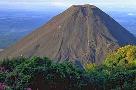
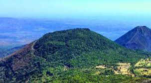

El Salvador se encuentra ubicado en la zona del Cinturón del Pacifico, por lo que a pesar de ser un país pequeño cuenta con casi un centenar de volcanes, de los cuales solo algunos se encuentran activos en la actualidad. A lo largo del tiempo esta zona ha sido conocida como “el valle de las hamacas”, ya que debido a la presencia de estas enormes creaciones de la naturaleza han existido numerosas erupciones y terremotos.
Sin embargo, los volcanes de El Salvador han sido también una parte importante para el turismo nacional, ya que llaman la atención a los turistas que desean escalar o subir a la cima de sus cráteres para contemplar los paisajes que desde ahí pueden observarse y al mismo tiempo contemplar lo maravillosa que es la naturaleza. El volcán más alto de El Salvador es el volcán de Santa Ana o volcán Ilamatepeq, el cual tiene una altura de 2,381 metros. Los volcanes activos con mayor actividad en la actualidad son el Volcán de San Salvador, Volcán de Santa Ana, Volcán de San Miguel, volcán de San Vicente, Volcán de Ilopango y volcán de Izalco. Izalco es uno de los más jóvenes de El Salvador y el continente americano, se originó en 1770, cuando un orificio en la falda del volcán de Santa Ana empezó a lanzar humo y cenizas. Por mucho tiempo fue conocido como El Faro del Pacífico, ya que desde su formación estuvo erupcionando casi sin cesar durante 196 años. Siempre que visites los volcanes se recomienda hacerlo con un guía turístico que te oriente en la zona, ya que en algunos casos podrías perderte en el camino. También se recomienda ir con ropa cómoda y zapatos adecuados, porque el viaje suele ser por lugares donde es necesario caminar. El país cuenta con una ruta turística en la cual se pueden conocer los volcanes del occidente del país (Santa Ana, Izalco y Cerro Verde).
|  | |
 |
|---|---|---|
| Volcan de Izalco | Volcan de Santa Ana | Cerro verde |
|
||
| Volcan de san salvador |